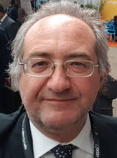
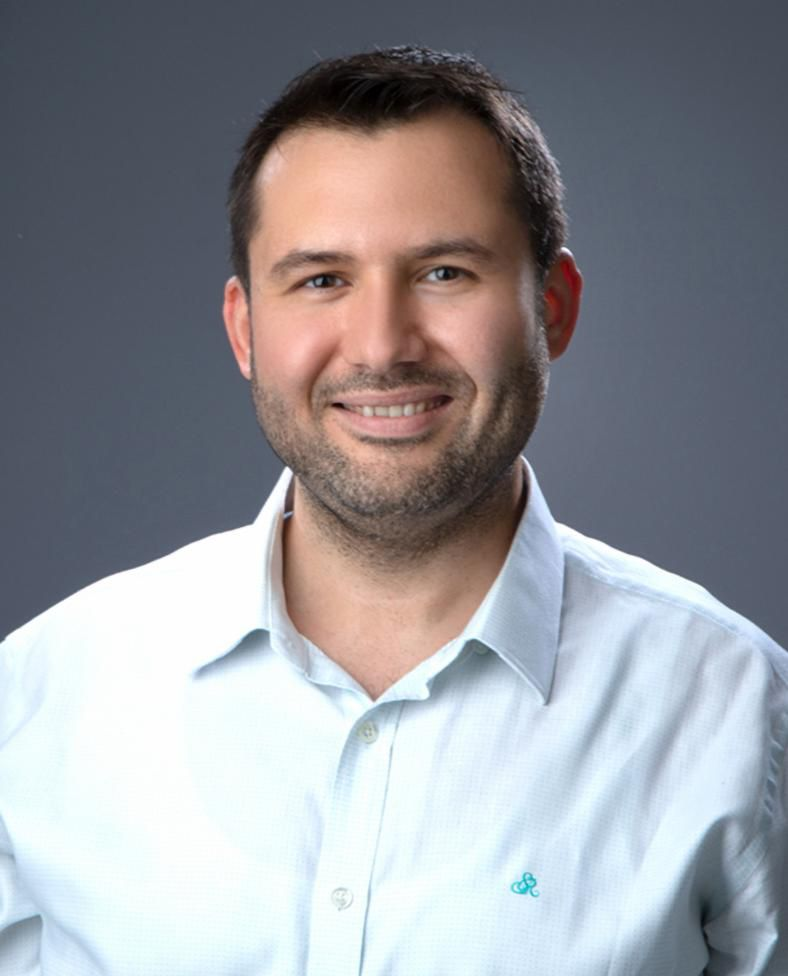

Programma
Il programma di massima mostra la distribuzione dei macro-slot nelle due giornate. Le tabelle successive indicano dove si svolgono le sessioni principali; i programmi dettagliati dei singoli workshop sono disponibili dai bottoni sotto le tabelle.
Programma di massima
Giovedì 18 giugno 2026
| Orario | Sala A | Sala B | Sala C |
|---|---|---|---|
| 08:00-09:00 | Registrazionestand nel corridoio dell'edificio CuBo | ||
| 09:00-10:30 | AI per la Medicina e la Salute | Generative & Agentic AI | AI per la Sostenibilità |
| 10:30-11:00 | Pausa caffè | ||
| 11:00-11:40 | AI per la Medicina e la Salute | Generative & Agentic AI | AI per la Sostenibilità |
| 11:40-13:10 | AI per la Cybersecurity | ||
| 13:10-14:30 | Pranzo | ||
| 14:30-14:50 | AI per la Medicina e la Salute | AI Responsabile e Affidabile | AI per la Pubblica Amministrazione |
| 14:50-16:10 | AI per l'Industria | ||
| 16:10-16:30 | - | ||
| 16:30-17:00 | Pausa caffè | ||
| 17:00-17:30 | AI per l'Industria | AI Responsabile e Affidabile | AI e Disinformazione |
| 17:30-17:40 | AI per la Robotica | ||
| 17:40-18:10 | - | ||
| 18:10-18:20 | - | - | |
| 19:00 | Social Event | ||
Venerdì 19 giugno 2026
| Orario | Aula Magna CUBO | Sala B |
|---|---|---|
| 09:30-10:00 | Apertura | - |
| 10:00-11:00 | Tavola rotonda: Intelligenza Artificiale per l'industria e la ricerca | - |
| 11:00-11:30 | Pausa caffè | |
| 11:30-12:15 | Tavola rotonda: Quantum Computing e Intelligenza Artificiale | NVIDIA workshop: Rapid Application Development with LLMs and a Medical Use-case11:30-13:30 |
| 12:15-13:30 | Sintesi dei workshop | |
| 13:30-14:30 | Pranzo | |
| 14:30-17:00 | - | Doctoral Consortium - presentazione dei paper |
| 17:00-17:10 | - | Distribuzione attestati e chiusura |
Programmi dettagliati dei workshop
Vai direttamente al programma dettagliato di ciascun workshop e del Doctoral Consortium.
Sessione plenaria
La sessione plenaria del mattino sarà articolata in due tavole rotonde con rappresentanti del mondo accademico, associativo e industriale.
Moderazione: Alessio Jacona
Giornalista, conduttore e moderatore esperto di tecnologia e innovazione, Alessio Jacona è curatore dell'Osservatorio Intelligenza Artificiale di Ansa.it e contributor per la trasmissione “Codice, la vita è digitale”, in onda su Rai1. Venticinque anni fa ha iniziato scrivendo di novità hardware e software; oggi racconta storie di persone, di come noi tutti usiamo le nuove tecnologie, delle opportunità e dei rischi che esse comportano; e poi, ancora, di come la loro adozione cambi il senso stesso di ciò che facciamo e siamo. Una trasformazione epocale, di cui oggi scrive su Italian Tech (Gruppo Gedi, ANSA.it), ANSA.it e Civiltà dei Dati, e di cui ha scritto in passato su Nova24 (IlSole24Ore), L'Espresso, Wired Italia, Corriere Motori.
Tavola rotonda 1 - Intelligenza Artificiale per l'industria e la ricerca: costruire valore per il Paese
Partecipano: Domenico Convertino (Senior Vice President di HCLTech), Maurizio Stumbo (Responsabile della Divisione Infrastrutture, Data Center e Cyber Security, di Sogei), Andrea Orlandini (Istituto di Scienze e Tecnologie della Cognizione del CNR, Presidente AIxIA) e Sebastiano Battiato (Università di Catania, Delegato CVPL per IAPR).
La tavola rotonda si propone di discutere come la collaborazione tra ricerca pubblica, università e imprese possa accelerare l'adozione dell'Intelligenza Artificiale e generare impatto economico e sociale. Il dibattito affronterà le opportunità offerte dall'AI per la competitività del sistema produttivo, l'innovazione nella pubblica amministrazione, il trasferimento tecnologico e la costruzione di competenze strategiche per il futuro del Paese.
Tavola rotonda 2 - Quantum Computing e Intelligenza Artificiale: convergenze, opportunità e sfide
Partecipano: Alessandro Zavatta (Presidente e COO di QTI Srl), Cosma Belli (Southern & Western Europe Director | Country Manager, Italy | Quantum Computing for HPC & AI | IQM Quantum Computers) e Beniamino Di Martino (Università della Campania Luigi Vanvitelli).
La discussione intende esplorare il rapporto tra Intelligenza Artificiale e tecnologie quantistiche, analizzando lo stato dell'arte, le prospettive applicative e gli scenari futuri. Il focus sarà sulle opportunità che possono nascere dall'integrazione tra AI e Quantum Computing, sui principali ostacoli scientifici e tecnologici ancora aperti e sul ruolo che ricerca e industria possono svolgere nello sviluppo di questo settore strategico.

Cosma Belli
Southern & Western Europe Director | Country Manager, Italy | Quantum Computing for HPC & AI | IQM Quantum Computers
Cosma Belli è direttore Southern & Western Europe e country manager per l'Italia di IQM Quantum Computers. Ha oltre vent'anni di esperienza nel settore IT, maturata in ruoli tecnici e di business development presso multinazionali, software company e system integrator, con un focus sull'adozione di nuove tecnologie e sul quantum computing per HPC e AI.

Beniamino Di Martino
Professor at Università degli Studi della Campania Luigi Vanvitelli
Beniamino Di Martino è professore presso l'Università degli Studi della Campania Luigi Vanvitelli. Partecipa alla tavola rotonda dedicata a Quantum Computing e Intelligenza Artificiale, contribuendo con la prospettiva accademica sui temi di ricerca, integrazione tecnologica e sviluppo applicativo.

Andrea Orlandini
Presidente AIxIA
Andrea Orlandini è Primo Ricercatore presso l'Istituto di Scienze e Tecnologie della Cognizione del CNR e Presidente di AIxIA. La sua attività di ricerca riguarda pianificazione automatica, robotica cognitiva e interazione uomo-macchina, con attenzione al dialogo tra ricerca, sistema produttivo e società civile.

Sebastiano Battiato
Delegato CVPL per IAPR
Sebastiano Battiato è Professore Ordinario di Informatica presso l'Università di Catania. Si occupa di computer vision, multimedia forensics e tecnologie di imaging applicate a contesti industriali e consumer, ed è docente di Computer Vision e Digital Forensics.

Domenico Convertino
Senior Vice President di HCLTech
Domenico Convertino è Senior Vice President, Communications Technology Group, di HCLTech. Ha una lunga esperienza nei settori telecomunicazioni, OSS/BSS, IT service management e automazione delle reti, maturata in ruoli di product management e trasformazione digitale.

Alessandro Zavatta
Presidente e COO di QTI Srl | Responsabile dell'Unità CNR-INO di Trieste
Alessandro Zavatta è Senior Research Scientist presso l'Istituto Nazionale di Ottica del CNR e professore a contratto all'Università di Firenze. Responsabile dell'Unità CNR-INO di Trieste, coordina il laboratorio CNR di Quantum Communication and Information (QCI) nelle sedi di Firenze e Trieste; la sua attività riguarda tecnologie quantistiche e comunicazioni quantistiche sicure. Co-fondatore dello spin-off CNR QTI, ha ottenuto finanziamenti nazionali e internazionali ed è coautore di oltre 100 pubblicazioni scientifiche.

Maurizio Stumbo
Responsabile della Divisione Infrastrutture, Data Center e Cyber Security, di Sogei
Maurizio Stumbo è un manager ICT con esperienza nella trasformazione digitale della pubblica amministrazione. In Sogei dal 2022, ha guidato aree legate a servizi digitali, infrastrutture e data center; in precedenza è stato direttore dei sistemi informativi di LAZIOcrea e vicepresidente di Assinter con delega ai servizi sanitari digitali.
Sintesi dei workshop
La sessione plenaria includerà anche un momento di sintesi dei workshop, coordinato da Carlo Sansone, Direttore del Laboratorio Nazionale CINI-AIIS, e da Paolo Soda, Professore presso l'Università Campus Bio-Medico di Roma.
Doctoral Consortium
Il Doctoral Consortium di venerdì 19 giugno 2026 include il workshop NVIDIA dalle 11:30 alle 13:30 e, nel pomeriggio, la presentazione dei lavori dei dottorandi fino alle 17:00, seguita dalla distribuzione degli attestati e dalla chiusura.
La sessione offrirà ai partecipanti un'occasione di confronto scientifico sui temi emergenti dell'AI, favorendo la discussione dei progetti di ricerca in corso e l'interazione tra dottorandi, docenti e speaker invitati. Il programma dettagliato con ogni contributo e relativo slot orario è disponibile nella pagina dedicata al Doctoral Consortium.
NVIDIA workshop on Rapid Application Development with LLMs and a Medical Use-case
Recent advancements in Large Language Models (LLMs) are transforming many sectors including Healthcare and Medicine. This hands-on workshop offered by NVIDIA sponsored curriculum is designed to help developers quickly build and deploy LLM-powered applications by leveraging the vast open-source ecosystem. Participants will explore the full development lifecycle, from understanding transformer architectures and tokenization to implementing sophisticated agentic workflows. The workshop will finish with a medical expert system use-case demonstration.
The session aims to provide practical experience for developers with the Hugging Face Transformers API for tasks such as semantic analysis, zero-shot classification, and question-answering. Beyond text, attendees will delve into multimodal architectures, including CLIP and diffusion models, to integrate images and audio into their AI workflows. Finally, the workshop covers advanced orchestration using LangChain and LangGraph to build environment-aware agents capable of executing complex, real-world tasks.
Questa attività si inserisce nel programma del Doctoral Consortium come momento formativo dedicato allo sviluppo rapido di applicazioni basate su LLM.

Eyup Cinar
Eskisehir Osmangazi University and NVIDIA University Ambassador
Eyup Cinar è Professore Associato nel Dipartimento di Computer Engineering della Eskişehir Osmangazi University, in Turchia. Ha conseguito il PhD in Microsystems Engineering al Rochester Institute of Technology e ha lavorato negli Stati Uniti come Senior Engineer in GLOBALFOUNDRIES e Senior Data Scientist in ASML-HMI. È NVIDIA University Ambassador, istruttore certificato NVIDIA Deep Learning Institute e PyTorch Ambassador; i suoi interessi riguardano metodi basati su AI, deep learning, machine learning e data science per sistemi intelligenti.